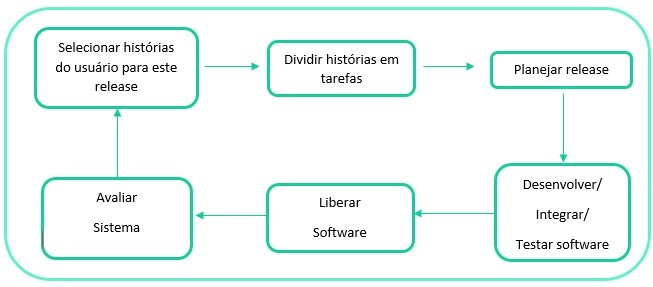

XP (eXtreme programming)
Metodologia focada no desenvolvimento de software que possui valores e princípios, onde são fundamentados por um conjunto de práticas. É uma metodologia leve que pode ser facilmente adotada por diferentes níveis de desenvolvedores (experientes ou não) e em qualquer tamanho de equipe. Esse metodo define um conjunto de cinco valores que estabelecem as bases para todo trabalho realizado.
- Desenvolvimento: Procura manter as comunicações certas fluindo por meio de emprego de muitas práticas que não podem ser feitas sem comunicação.
- Simplicidade: A XP aposta que é melhor fazer uma coisa simples hoje e investir um pouco mais para depois fazer uma modificação, se necessária, do que desenvolver algo mais complexo que talvez nunca será utilizado.
- Feedback: Melhora a comunicação e a simplicidade. Quanto mais feedbacks, mais fácil será a comunicação.
- Coragem: Um projeto começa simples e depois é transformado para algo mais ousado e complexo.
- Respeito: Respeito é um valor que sustenta todos os outros pilares. Quando não há respeito com os companheiros de equipe, todos os outros valores se ficam comprometidos.
Existem algumas abordagens orientadas a objetos que a XP emprega que envolvem um conjunto de práticas
- Planejamento: Histórias de usuários, valores, critérios de testes de aceitação e planos de interação.
- Projeto: : Projetos simples, cartões CRC
- Codificação: Programação em pares
- Testes: Testes de unidade (integração contínua), testes de aceitação.
Essas práticas se enquadram nos seguintes princípios dos métodos ágeis:
- O envolvimento do cliente é apoiado pelo engajamento em tempo integral
- O desenvolvimento incremental é apoiado por pequenos e frequentes releases do sistema baseado nos cenários do cliente
- As pessoas, não o processo, são apoiadas ao dividirem a programação com seus pares
- A manutenção da simplicidade é apoiada pelo refectoring constante para aprimorar a qualidade do código
- As mudanças são apoiadas por meio de releases regulares do sistema
Dentro de um processo XP, os clientes são envolvidos na especificação e priorização dos requisitos do sistema. Ao invés de especificar os requisitos como uma lista de funções, o cliente é parte da equipe de desenvolvimento e particica da discussão dos cenários com outros membros da equipe e, dessa forma, desenvolvem um “cartão de histórias” que engloba as suas necessidades.
Depois a equipe de desenvolvimento trabalha na implementação do cenário descrito no “cartão de histórias” em um release de software.
O cliente prioriza as histórias para implementação, escolhendo as que podem ser utilizadas imediatamente para apoio útil aos negócios. Enquanto a engenharia de software tradicional espera que o desenvolvedor faça previsões futuras e antecipe e incorpore essas mudanças ao novo software, a XP descarta esse princípio alegando que projetar para a mudança é, geralmente um esforço inútilm pois muitas vezes essas mudanças não ocorrem e as solicitações de mudanças concretas podem ser completamente diferentes.
Papéis no XP
Os papéis no XP têm por objetivo auxiliar para que cada membro da equipe contribua com o melhor das suas habilidades, para o sucesso da equipe. Dentro de uma equipe XP, podem ter os seguintes papéis:
- Executivos: : O papel dos executivos está focado no auxílio da definição do escopo do projeto, bem como manter alinhado a organização, além disso auxiliando a equipe para desenvolver o seu trabalho, administrando as pressões e os obstáculos.
- Gerentes de projeto: Gerentes do projeto servem de ponte entre a equipe, os clientes e os fornecedores. Os gerentes precisam assegurar que as pessoas certas converser dentro da equipe e fora dela.
- Gerentes de produto: O gerente de produto é o responsável por ajudar o produto a tomar o corpo de acordo com o que foi projetado, evitando modificações do projeto.
- Arquitetos: Ajudam os desenvolvedores no dia a dia por meio de programação em par e podem ajudar a equipe a criar testem que exercitem a arquitetura com um todo.
- Analista de testes: São os responsáveis por ajudar clientes e desenvolvedores, no início das interações, a escrever todos os testes.
- Designers de interação: Ajudam a criar a interface. Os designers trabalham bem próximo dos clientes do proejto.
- Programadores: Trabalham em pares na implementação do projeto. Eles automatizam as tarefas repetitivas e criam as novas funcionalidades.
- Recursos Humanos: É o setor responsável pelo recrutamento e seleção da equipe para o projeto. Habilidades técnicas e de trabalho em equipe são itens avaliados no momento do recrutamento.
- Redatores técnicos: São os responsáveis em criar e manter a documentação do projeto.
- Usuários: Tem participação valiosa no projeto, ainda mais quando tem domínio sobre o negócio. São envolvidos desde o início.
Fontes:
Vettorazzo, Adriana, Engenharia de Software, I ed, Porto Alegre, Sagah Educação S.A, 2018